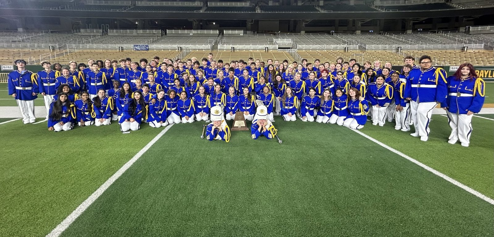
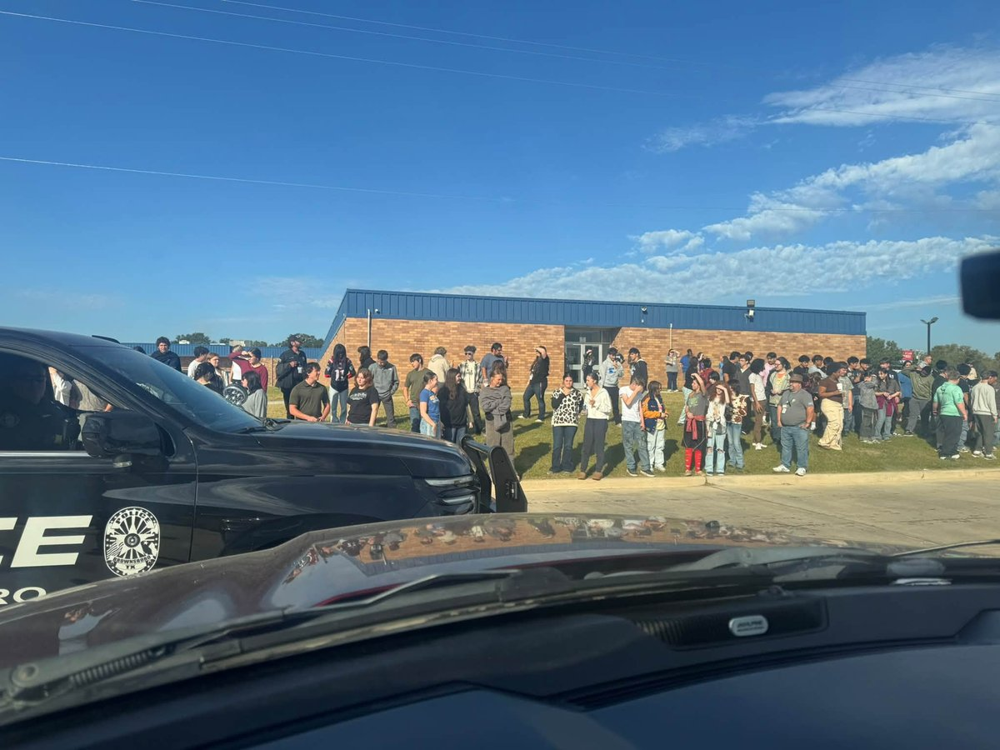
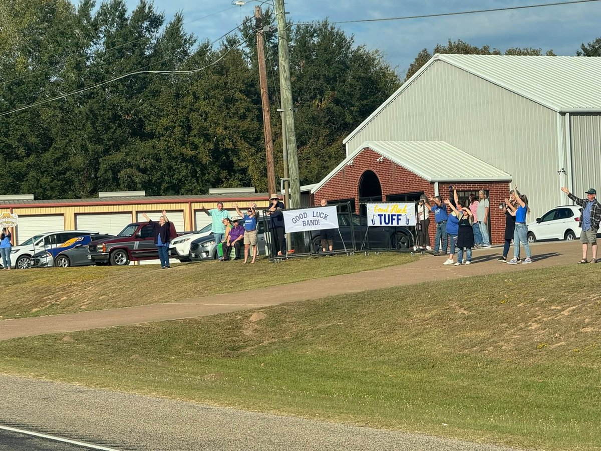

Neighbor Story · Brownsboro ISD
Brownsboro Military Band Brings It Home: The Sound of Earning It
With Jake Ham, students learn the music, teach the newcomers and earn their way back to the state finals

In Jake Ham’s band, the students who set the goals also help teach the first steps.
The upperclassmen audition for the chance to lead. They train before the newcomers arrive, then help the freshmen learn the marching fundamentals. They also help decide what the band will work toward. This year, one of their goals was to return to the state finals. The next trip would have to be earned together.
On Oct. 27 at McLane Stadium at Baylor University in Waco, the Brownsboro High School band finished fifth in the Conference 4A finals of the UIL State Military Class Marching Band Contest. It was the students’ second consecutive fifth-place finish, matching 2025.
For Ham, those matching results tell a story of growing ambition. The first trip to the finals surprised them. This time, the students made returning a goal—and did the work to turn it into a result.
“The first year was kind of a shock to all of us that we made it to the finals and were competing against the top bands in the state,” Ham said.
This year, he said, they wanted that experience again. The return gave Brownsboro another reason to cheer: young men and women had chosen a high goal, accepted the work it required and helped one another reach it.
Learning it well enough to lead
Ham’s standard reaches beyond getting through the drill. His aim is to “make the band sound like a concert band that is marching on a football field.”
He gives both halves of that assignment close attention. During summer camp, the full band divides its time between music rehearsals inside and marching fundamentals outside. Students work as a group and in smaller squads organized by instrument. The detail in the music matters as much as the detail in the marching, he said.
The preparation starts with the squad leaders, upperclassmen who audition at the end of the previous school year. Their early training becomes part of what they can pass on when the freshmen join them.
Preparation begins in July, with squad leaders training first and freshmen joining before the full band comes together. During marching season, Monday sectionals and rehearsals stretch from 4:30 to 9 p.m.
Ham describes students pushing through exhaustion in the hot summer hours, repeating a set until they can get it cleaned and polished. Like a well-drilled platoon, the bandmates practice the movements over and over, working toward precision together.
That repetition gives substance to the goal their leaders chose. Returning to the finals required another summer’s preparation and another season’s work. Last year’s result was something to build on, not a substitute for doing it again.
The teacher who was once the student
Long before he was challenging Brownsboro students to reach for greatness, Ham was a fifth-grader in Jacksonville learning percussion.
He stayed with it through his high school’s marching band program. He remembers the teachers who helped him grow, including Jeff Russel, who, Ham said, later served for many years as Brownsboro’s head director.
“I had some great music teachers growing up in Jacksonville,” Ham said.
In 2014, Russel hired his former student onto the Brownsboro staff. Ham said he had graduated from UT Tyler in 2010 and begun teaching at Lon Morris College in 2011. Now in his third year as Brownsboro’s head director, he is carrying that teaching tradition forward: helping young musicians develop their skills and reach for loftier goals.
Military-style marching is familiar ground for him. He marched that style in high school, and he describes it as a tradition deeply rooted in East Texas and long maintained in Brownsboro.
He and his students enjoy watching the Texas A&M Fighting Aggie Band. Recently, he said, multiple Brownsboro graduates have gone on to march with the Aggies on Saturdays. The tradition has given those musicians something to carry beyond their high school years.
For Ham, pride in the school district and community belongs alongside appreciation for the people who have served in the armed forces. He sees honoring veterans as another meaningful connection students can make through the tradition.
“I believe that it does give our students more gratitude and appreciation to all of our veterans for serving in our Armed Forces over the years,” he said.
A place earned twice
The official results trace Brownsboro’s progress. In 2024, the band placed 10th in the 4A preliminary round and did not advance to the finals. In 2025—and then, amazingly, once again this year—the band placed fourth in preliminaries and fifth in the state’s 4A military marching finals.
For Brooke Foster, whose son plays trombone, those results carry the added pride of watching a smaller band compete against larger programs. In her account, Brownsboro marches almost all its students, with only four or five alternates available if someone becomes sick or injured.
“So it’s kind of a David and Goliath story or an underdog story,” she said.
Foster recalled crying when the band reached the top five last year. The students had achieved something she had struggled to imagine for them. This year, Brownsboro got to celebrate that achievement again.
She connects that willingness to work with the relationship between Ham and his students.
“They work hard for him because he loves them and they love him back,” she said.
The people behind the music

Before the trip to state, Foster recalled, neighbors came out to celebrate the students’ chance to represent Brownsboro. She had approached the police and fire departments about an escort and received an enthusiastic response, she said.
People without children in the band came to the send-off with signs. Foster also recalled the mayor and his wife attending, and several council members taking time away from work to be there.
“I had never seen the community this excited about band,” she said.

Ham has worked with Brownsboro’s band since 2014. In that time, he said, he has never seen as much support from the community and other school organizations as he has recently. The last couple of years have been especially meaningful to him.
He knows what that support requires. Parents get students to rehearsals and pick them up after late Friday football games. They chaperone buses and work concession stands on Thursday and Friday nights. Without them, he said, the program could not provide everything the students need.
“They are the real heroes in all of this,” he said of parents and boosters.
“The BMB has a ton of working parts and they all make it happen day in and day out,” he said.
His appreciation for those people and what they do, he said, is more than he can express.
What the work gives back
“It’s been extremely exciting,” Ham said of the band’s accomplishment.
What keeps him passionate about the job is the music itself and watching students progress from their first day to the end of marching season. He sees the reward in their success, in “the love for music and the pride for our school district and community.”
“The last two marching seasons have been an experience that I and the students will never forget,” he said.
He hopes to see Brownsboro back at McLane Stadium for years to come. His students have already shown what returning asks of them: leaders helping newcomers, musicians attending to the details, a group willing to repeat the work until it improves.
The students chose the goal and did the work that brought them back. Their director is clear about what they accomplished.
“They worked extremely hard and earned that right to be there this year and I couldn’t be more proud of them.”
Editor’s note to the band
To the young men and women of the Brownsboro Military Band, Congratulations on a job well done. You set a high goal, worked together and earned your place back in the state finals. BISD’s motto is “Together We Rise. Together We Lead.” You carried it well. The habits you’ve demonstrated will serve you well throughout your high school years and beyond!
— James Burgess